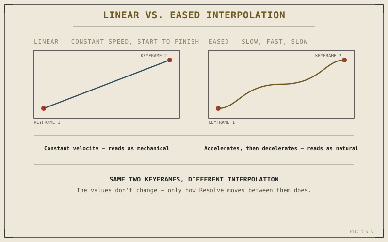

Every property this part has touched — a title's position, a generator's color, an effect's intensity — has been treated as a single fixed value, set once and held for as long as the clip plays. Keyframing is what breaks that assumption open: the mechanism that lets any of these properties change smoothly over time instead of staying still. It's the missing piece that turns everything Part VII has covered from static elements into genuine motion graphics, and it closes out this part for exactly that reason.
What a Keyframe Actually Marks
A keyframe is a specific value for a property, pinned to a specific point in time. On its own, one keyframe does nothing differently than a fixed value would. What makes keyframing powerful is what happens with two or more: Resolve automatically calculates every value in between two keyframes, producing smooth, continuous change from just a handful of explicit points rather than requiring you to define every intermediate value yourself. Setting a title's position at the start of a clip and a different position near its end, with keyframing enabled, is enough to produce a clean, continuous slide across the full duration between them.
Setting Keyframes: The Basic Workflow
Practically, keyframing follows a consistent pattern across every parameter it applies to: park the playhead where the change should begin, set the property's starting value, and enable keyframing for that specific parameter, typically by clicking a small stopwatch-style icon beside it in the Inspector. From there, moving the playhead forward and changing the value creates a new keyframe automatically at that point — no separate step required. This same pattern works identically whether the property being animated is a title's position, a generator's opacity, or a Fusion effect's intensity, because keyframing isn't tied to any one of them specifically.

Two keyframes, two very different feels — the line between them is doing all the work.
Ease and Interpolation: Why Motion Can Feel Robotic
By default, Resolve interpolates between keyframes linearly — constant speed, start to finish, with no acceleration or deceleration at either end. This is exactly why unadjusted keyframed motion often looks faintly robotic: almost nothing in the real world moves at a perfectly constant speed the instant it starts and stops instant. Switching a keyframe's interpolation to an eased curve — slower at the start, faster through the middle, slower again at the end — is a small adjustment that makes animated motion read as considerably more natural, and it's a habit worth building before keyframed motion ships in a project rather than something to fix only when it visibly looks wrong.
Two keyframes define where motion starts and ends. The interpolation between them decides whether it feels alive or mechanical — and that's a separate decision from the values themselves.
Keyframing as a Capability, Not a Separate Tool
It's worth closing on the same point Chapter 7.4 made about generators and effects, because it applies here just as directly: keyframing isn't its own distinct feature sitting apart from everything else in this part. It's a capability nearly every numeric parameter across transitions, titles, generators, and effects already has, waiting to be turned on. A transition's blend amount, a title's scale, a generator's color, a Fusion effect's strength — all keyframeable through the exact same stopwatch-and-playhead workflow this chapter just described, because they're all, underneath, just parameters with values that can change over time.
That closes Part VII. Between overlap-based transitions, three distinct approaches to titles, generators and Fusion effects as a shared toolkit, and now keyframing to animate any of it, the Edit page's full layer of on-timeline craft is covered. Part VIII turns to a domain this book has referenced constantly but never covered directly — audio — starting with the basics of working with sound on the Edit page itself, before Part IX moves into the dedicated Fairlight environment.
Key Concepts to Remember
- A keyframe pins a property's value to a point in time — Resolve interpolates every value in between two or more keyframes automatically.
- Setting a keyframe follows one consistent pattern everywhere: position the playhead, set the value, enable keyframing for that parameter.
- Default linear interpolation often looks robotic — eased curves that slow at the start and end read as far more natural.
- Keyframing isn't a separate tool — it's a capability nearly every numeric parameter across this part's tools already has.
Cross-References Forward
| → Pt. VIII | Audio Editing & Fairlight — turns from the Edit page's visual layer to the audio work referenced throughout this book. |
| → Ch. 7.4 | Revisit generators and Fusion effects, the toolkit this chapter's keyframing capability applies to. |
| → Ch. 5.6 | Revisit Dynamic Trim Mode, another place live playback and precise adjustment work together, as they do here. |